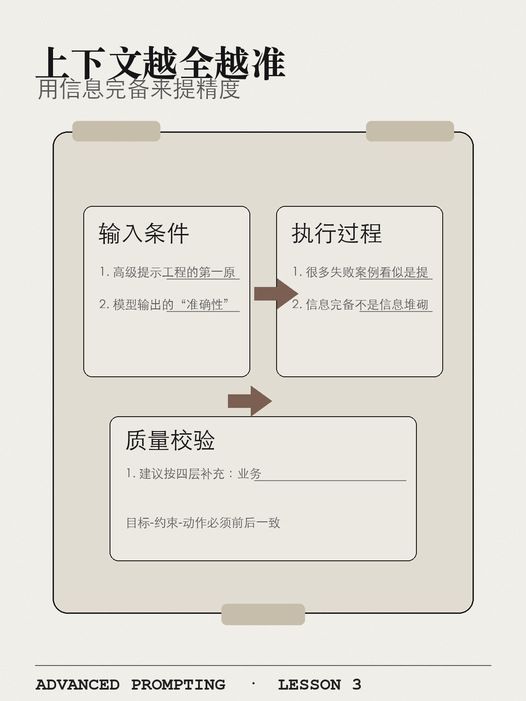
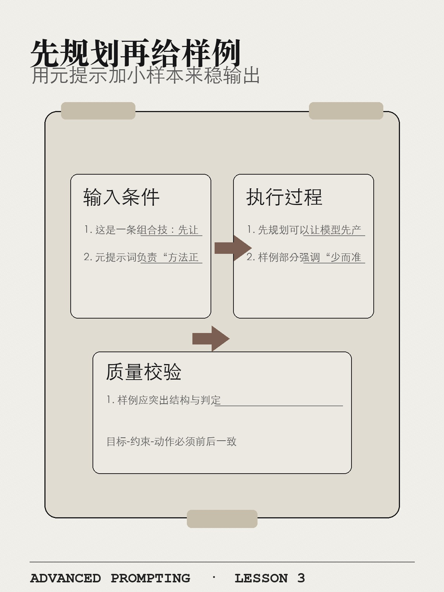
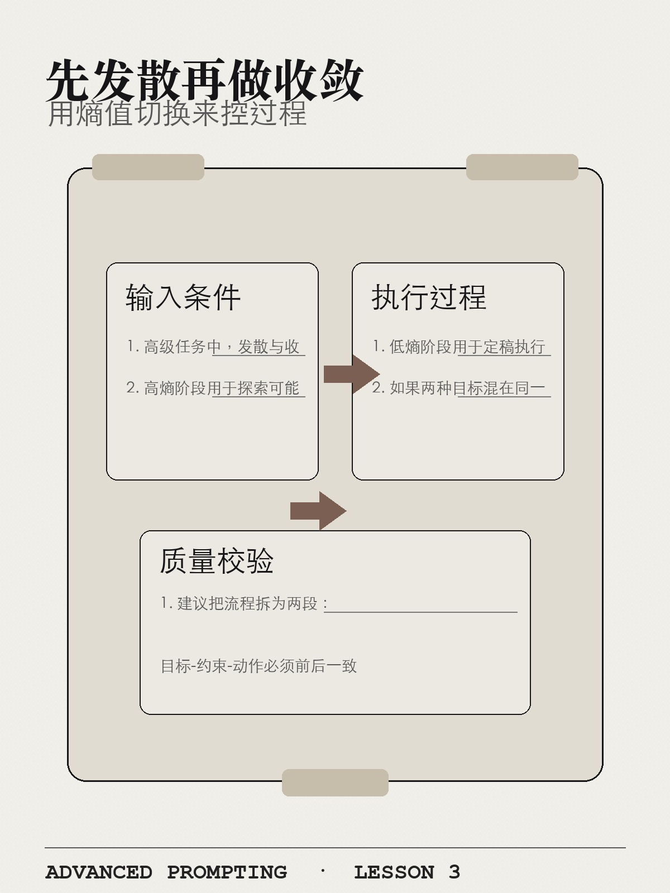
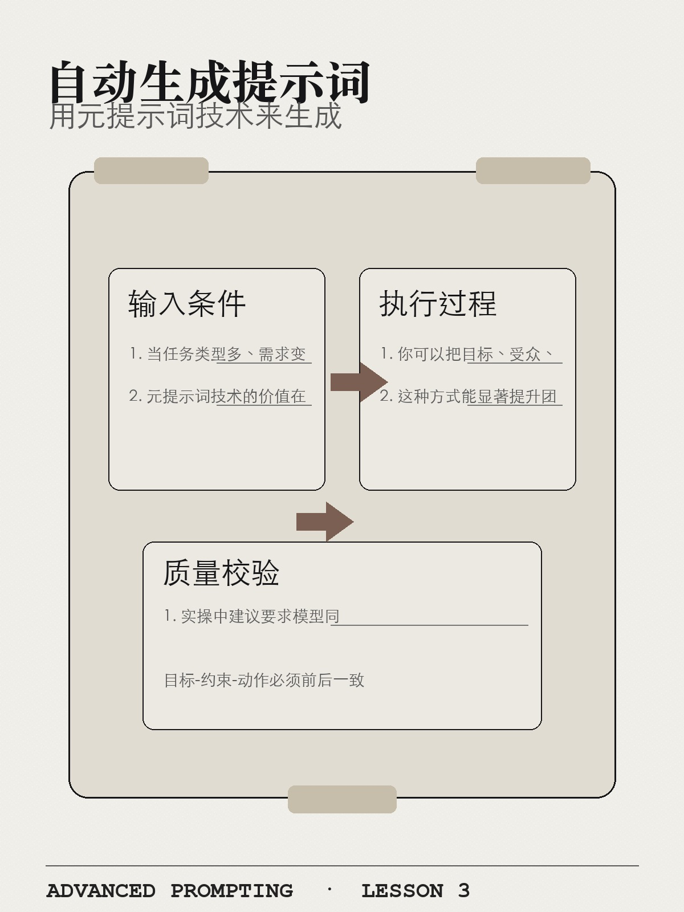
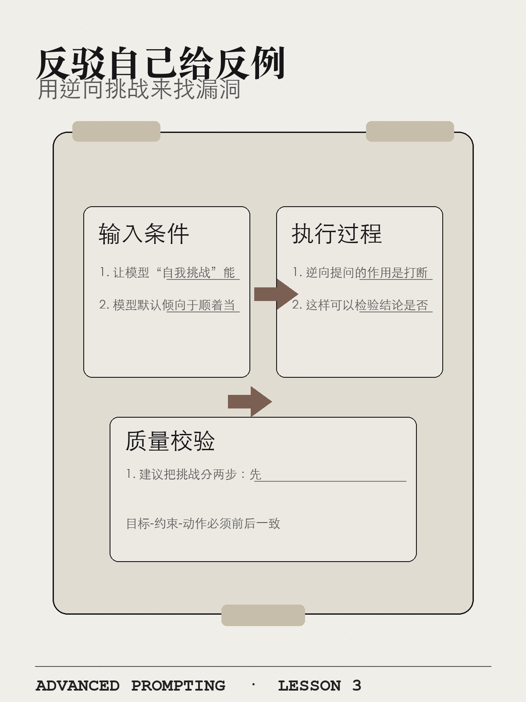
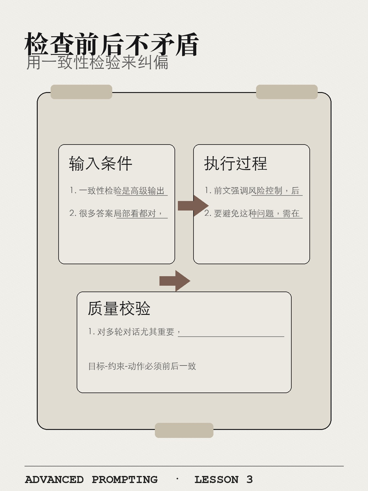
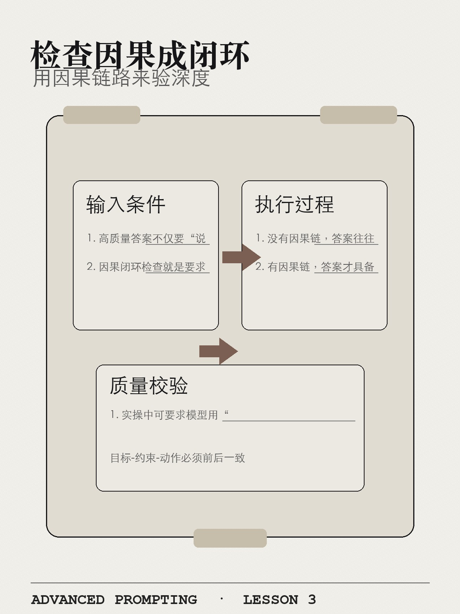
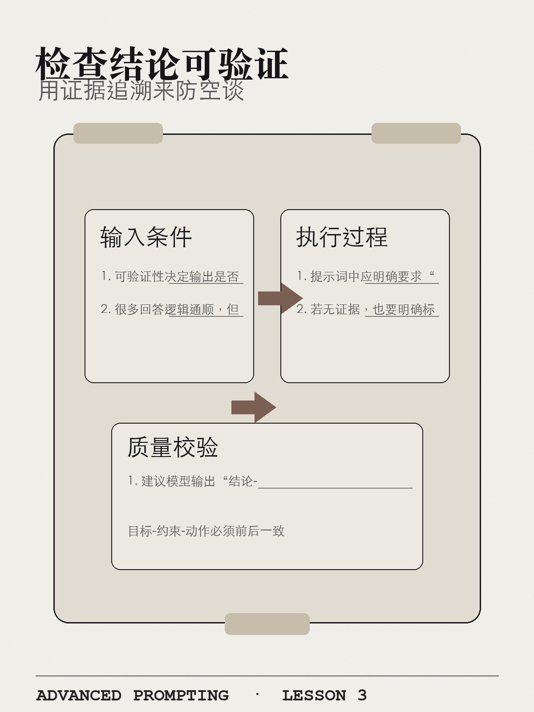

高级提示词
和提示工程
Rundown
技巧全景图
从信息完备，到过程控制，再到质量治理

高级构建
先把信息条件构全，再追求产出漂亮。
上下文越全越准
用信息完备来提精度
高级提示工程的第一原则不是加更多规则，而是补足关键上下文。模型输出的“准确性”本质上取决于信息条件，而非修辞力度。很多失败案例看似是提示词写得不够强硬，实则是任务背景缺失：目标对象不明确、历史决策未知、资源约束未说明、风险偏好不透明。信息完备不是信息堆砌，关键在于提供“与决策直接相关”的事实。建议按四层补充：业务目标层、场景约束层、已知事实层、验收标准层。这样模型会在你给定的语义空间内推理，而不是在通用语料概率里猜测。对复杂业务问题，这种做法比追加“请务必”“请严格”更有效，且更可复用。

上下文越全越准
高级提示工程的第一原则不是加更多规则，而是补足关键上下文。模型输出的“准确性”本质上取决于信息条件，而非修辞力度。很多失败案例看似是提示词写得不够强硬，实则是任务背景缺失：目标对象不明确、历史决策未知、资源约束未说明、风险偏好不透明。信息完备不是信息堆砌，关键在于提供“与决策直接相关”的事实。建议按四层补充：业务目标层、场景约束层、已知事实层、验收标准层。这样模型会在你给定的语义空间内推理，而不是在通用语料概率里猜测。对复杂业务问题，这种做法比追加“请务必”“请严格”更有效，且更可复用。
1）高级提示工程的第一原则不是加更多规则，而是补足关键上下文。
2）模型输出的“准确性”本质上取决于信息条件，而非修辞力度。
3）很多失败案例看似是提示词写得不够强硬，实则是任务背景缺失：目标对象不明确、历史决策未知、资源约束未说明、风险偏好不透明。
1）信息完备不是信息堆砌，关键在于提供“与决策直接相关”的事实。
2）建议按四层补充：业务目标层、场景约束层、已知事实层、验收标准层。
3）这样模型会在你给定的语义空间内推理，而不是在通用语料概率里猜测。
输出需要可复用、可追溯、可执行。
误区1：对复杂业务问题，这种做法比追加“请务必”“请严格”更有效，且更可复用。
误区2：若信息不足先补充再执行。
修正：若信息不足先补充再执行。
口诀：先定边界，再控过程，最后再出结论。
上下文越全越准
给我一个增长方案，越详细越好。
## 任务背景 我们正在为一款月活 5 万的产品设计增长方案，当前核心问题是次月留存偏低。 ## 已知条件 - 当前月活：5 万 - 可用预算：30 万 - 执行周期：8 周 - 执行团队：4 人 - 业务目标：提升次月留存 5% ## 输出要求 请给出 3 套可执行增长方案，并分别说明： 1. 核心思路 2. 执行步骤 3. 所需资源 4. 主要风险 5. 验证指标 ## 约束 不要给泛泛而谈的建议，所有方案必须能在 8 周内落地，并说明风险差异。
优化这个流程。
## 现状背景 我们正在优化一个内部审批流程，目前主要瓶颈集中在审批环节。 ## 已知条件 - 当前审批平均耗时：4 天 - 合规规则：不可修改 - 优化范围：流程协同、材料准备、节点衔接、提醒机制 ## 优化目标 在不改变合规规则的前提下，缩短审批等待时间，并降低反复补材料的概率。 ## 输出要求 请给出一套提效方案，包含： 1. 当前瓶颈判断 2. 可调整环节 3. 具体改进动作 4. 预期节省时间 5. 需要协同的角色 ## 风险提示 请标注哪些动作可能带来合规风险，并给出规避方式。
做个培训设计。
## 受众背景 课程面向入职 0-6 个月的新员工，学员对业务流程和工单规范还不稳定。 ## 课程条件 - 单次时长：55 分钟 - 训练场景：新人独立处理基础工单 - 课程目标：学员在一周内可以独立完成常见工单 ## 学习目标 请让课程设计围绕以下能力展开： 1. 判断工单类型 2. 找到处理流程 3. 按规范填写处理记录 4. 识别需要升级的问题 ## 输出要求 请给出课程结构与练习设计，包含： - 时间分配 - 每个环节的教学目标 - 课堂练习 - 课后任务 - 讲师检查点 ## 验收标准 课程结束后一周内，新人可以独立完成常见工单，并知道何时升级处理。
先规划再给样例
用元提示加小样本来稳输出
这是一条组合技：先让模型规划，再用最小高质量样例做行为锚定。元提示词负责“方法正确”，Few-shot 负责“表现稳定”。先规划可以让模型先产出步骤、检查点和风险，再进入正文，避免一上来就在错误路径上高效输出。样例部分强调“少而准”：给 1-3 个高代表性样本，覆盖主流场景和边界情况，比堆十几个相似样例更有效。样例应突出结构与判定标准，而不是内容堆量。对于格式强约束、质量稳定要求高的任务，这种组合能明显提升首稿可用率，并降低多轮修订成本。它的本质是把“思路控制”和“行为示范”分离，分别施加约束。

先规划再给样例
这是一条组合技：先让模型规划，再用最小高质量样例做行为锚定。元提示词负责“方法正确”，Few-shot 负责“表现稳定”。先规划可以让模型先产出步骤、检查点和风险，再进入正文，避免一上来就在错误路径上高效输出。样例部分强调“少而准”：给 1-3 个高代表性样本，覆盖主流场景和边界情况，比堆十几个相似样例更有效。样例应突出结构与判定标准，而不是内容堆量。对于格式强约束、质量稳定要求高的任务，这种组合能明显提升首稿可用率，并降低多轮修订成本。它的本质是把“思路控制”和“行为示范”分离，分别施加约束。
1）这是一条组合技：先让模型规划，再用最小高质量样例做行为锚定。
2）元提示词负责“方法正确”，Few-shot 负责“表现稳定”。
3）先规划可以让模型先产出步骤、检查点和风险，再进入正文，避免一上来就在错误路径上高效输出。
1）样例部分强调“少而准”：给 1-3 个高代表性样本，覆盖主流场景和边界情况，比堆十几个相似样例更有效。
2）样例应突出结构与判定标准，而不是内容堆量。
3）对于格式强约束、质量稳定要求高的任务，这种组合能明显提升首稿可用率，并降低多轮修订成本。
输出需要可复用、可追溯、可执行。
误区1：它的本质是把“思路控制”和“行为示范”分离，分别施加约束。
误区2：若信息不足先补充再执行。
修正：若信息不足先补充再执行。
口诀：先定边界，再控过程，最后再出结论。
先规划再给样例
直接写，参考你自己的最佳实践。
## 任务背景 我要生成一份对外客户案例初稿，但不希望你直接开始写正文。 ## 执行计划 请先输出写作计划，必须包含： 1. 写作步骤 2. 每一步的检查点 3. 可能跑偏的风险 4. 需要我确认的信息 ## 样例规则 我会提供 2 个样例，样例只用于对齐结构、语气和口径，不要求复用其中的业务内容。 ## 生成要求 在计划确认后，再按样例风格生成正文。 ## 验收标准 最终内容需要结构稳定、语气一致，并能说明哪些地方参考了样例规则。
我给你 15 个例子，你照着写。
## 任务背景 我要让你学习一组内容分类样例，并生成新的分类结果。 ## 样例输入 我会提供 3 个样例： 1. 标准场景：代表最常见写法 2. 边界场景：代表容易误判的情况 3. 反例：代表不应采用的写法 ## 执行步骤 请先总结样例背后的判断规则，再开始处理新内容。 ## 输出要求 请输出： 1. 样例规则总结 2. 新内容分类结果 3. 每条结果的判断依据 4. 与反例的区别 ## 验收标准 不得机械拼接样例原句，必须用规则解释你的输出。
你就按感觉做。
## 任务背景 我要生成一份运营复盘模板，但目前只有少量样例和明确验收标准。 ## 执行计划 请先说明你会如何拆解任务，包括： 1. 先识别输出结构 2. 再提取样例风格 3. 最后按验收标准生成内容 ## 样例使用规则 样例用于参考表达方式和结构，不作为最高优先级规则。 ## 冲突处理 如果样例与验收标准冲突，请以验收标准为准，并说明你舍弃了样例中的哪类写法。 ## 输出要求 请先给任务拆解，再输出最终模板。
先发散再做收敛
用熵值切换来控过程
高级任务中，发散与收敛应分阶段管理。高熵阶段用于探索可能性，鼓励备选路径、假设比较和多方案并行；低熵阶段用于定稿执行，强调一致口径、固定结构和严格边界。如果两种目标混在同一提示中，常见结果是“既不够创新，也不够可落地”。建议把流程拆为两段：先让模型生成多个候选方案并说明适用条件，再通过明确筛选标准选出一条路径进行收敛输出。这样可避免过早锁定导致方案单一，也避免持续发散导致无法交付。这个技巧特别适合策略设计、课程方案、产品路线等需要先探索后决策的任务。

先发散再做收敛
高级任务中，发散与收敛应分阶段管理。高熵阶段用于探索可能性，鼓励备选路径、假设比较和多方案并行；低熵阶段用于定稿执行，强调一致口径、固定结构和严格边界。如果两种目标混在同一提示中，常见结果是“既不够创新，也不够可落地”。建议把流程拆为两段：先让模型生成多个候选方案并说明适用条件，再通过明确筛选标准选出一条路径进行收敛输出。这样可避免过早锁定导致方案单一，也避免持续发散导致无法交付。这个技巧特别适合策略设计、课程方案、产品路线等需要先探索后决策的任务。
1）高级任务中，发散与收敛应分阶段管理。
2）高熵阶段用于探索可能性，鼓励备选路径、假设比较和多方案并行；
3）低熵阶段用于定稿执行，强调一致口径、固定结构和严格边界。
1）如果两种目标混在同一提示中，常见结果是“既不够创新，也不够可落地”。
2）建议把流程拆为两段：先让模型生成多个候选方案并说明适用条件，再通过明确筛选标准选出一条路径进行收敛输出。
3）这样可避免过早锁定导致方案单一，也避免持续发散导致无法交付。
输出需要可复用、可追溯、可执行。
误区1：这个技巧特别适合策略设计、课程方案、产品路线等需要先探索后决策的任务。
误区2：若信息不足先补充再执行。
修正：若信息不足先补充再执行。
口诀：先定边界，再控过程，最后再出结论。
先发散再做收敛
给我一个又创新又严谨且能立刻执行的唯一方案。
## 任务背景 我要为一个新用户激活项目选择执行策略，不能一开始就锁定单一方案。 ## 发散阶段 请先给出 4 个不同策略方向，每个方向说明： 1. 核心假设 2. 适用条件 3. 预期收益 4. 主要风险 ## 收敛标准 请用以下维度筛选： - 成本 - 风险 - 见效速度 - 团队可执行性 ## 最终输出 请选出 1 个最推荐方案，并说明为什么它优于其他 3 个方向。 ## 约束 不要直接给唯一答案，必须先发散再收敛。
一次性把所有内容定稿。
## 任务背景 我要设计一门 60 分钟内部培训课，目前还没有最终目录。 ## 发散阶段 请先生成 3 套候选课程目录，每套目录说明： 1. 适合的学员类型 2. 核心训练重点 3. 可能的优缺点 ## 收敛标准 最终目录必须服务于目标：让学员课后能独立完成一次基础任务。 ## 最终输出 请收敛成 1 套最终目录，并删除与目标弱相关的内容。 ## 验收标准 最终目录需要包含时间分配、练习环节和课后验证方式。
多想点，但别太复杂，直接可执行。
## 任务背景 我要为一个产品功能制定上线沟通方案，需要先探索不同表达路径，再形成定稿。 ## 探索阶段 请先给出 3 种沟通路径： 1. 面向用户价值 2. 面向使用步骤 3. 面向风险说明 ## 收敛阶段 请根据清晰度、执行成本和用户理解难度，选择 1 种路径进入定稿。 ## 固定边界 定稿阶段请固定： - 标题结构 - 语气风格 - 禁止夸大承诺 - 不新增未经确认的功能信息 ## 最终输出 请给出单一可执行版本，而不是继续提供多个备选。
大任务分步推进
用步骤编排来提可控
把复杂任务拆成步骤，不是形式主义，而是复杂度管理。高级提示中常见失败是一次性要求“分析+决策+生成+校验”，模型会在不同子任务之间切换不稳定，导致遗漏和逻辑跳跃。步骤化可以把认知负担拆开：先定义问题，再分析数据，再给候选，再做取舍，再形成交付。每一步都可设置检查点，便于你在中途纠偏，而不是最后整体返工。建议步骤数控制在 4-7 步，过少不够细，过多增加噪声。步骤描述要可执行，例如“先列约束再给方案”，而不是“仔细想想”。对于跨部门项目、培训设计和策略产出，分步推进能显著提升可解释性与可控性。
大任务分步推进
把复杂任务拆成步骤，不是形式主义，而是复杂度管理。高级提示中常见失败是一次性要求“分析+决策+生成+校验”，模型会在不同子任务之间切换不稳定，导致遗漏和逻辑跳跃。步骤化可以把认知负担拆开：先定义问题，再分析数据，再给候选，再做取舍，再形成交付。每一步都可设置检查点，便于你在中途纠偏，而不是最后整体返工。建议步骤数控制在 4-7 步，过少不够细，过多增加噪声。步骤描述要可执行，例如“先列约束再给方案”，而不是“仔细想想”。对于跨部门项目、培训设计和策略产出，分步推进能显著提升可解释性与可控性。
1）把复杂任务拆成步骤，不是形式主义，而是复杂度管理。
2）高级提示中常见失败是一次性要求“分析+决策+生成+校验”，模型会在不同子任务之间切换不稳定，导致遗漏和逻辑跳跃。
3）步骤化可以把认知负担拆开：先定义问题，再分析数据，再给候选，再做取舍，再形成交付。
1）每一步都可设置检查点，便于你在中途纠偏，而不是最后整体返工。
2）建议步骤数控制在 4-7 步，过少不够细，过多增加噪声。
3）步骤描述要可执行，例如“先列约束再给方案”，而不是“仔细想想”。
输出需要可复用、可追溯、可执行。
误区1：对于跨部门项目、培训设计和策略产出，分步推进能显著提升可解释性与可控性。
误区2：若信息不足先补充再执行。
修正：若信息不足先补充再执行。
口诀：先定边界，再控过程，最后再出结论。
大任务分步推进
把这个事情从头到尾都做完，直接给最终版。
## 任务背景 我要制定一个跨部门项目推进方案，任务较复杂，不能直接给最终版。 ## 分步流程 请按 5 步执行： 1. 目标澄清 2. 约束清单 3. 方案备选 4. 方案评估 5. 最终定稿 ## 每步交付物 每一步都先输出阶段结果，再进入下一步。 ## 暂停条件 如果某一步信息不足，请先列出缺失信息和默认假设，不要跳过。 ## 最终输出 请在完成前 4 步后，再给出最终方案和执行时间表。
你自由发挥，完整一点。
## 任务背景 我要完成一份业务分析报告，需要你先搭建执行路径。 ## 步骤计划 请先列出完整步骤，并说明每一步的交付物，例如： 1. 输入信息整理 2. 关键问题拆解 3. 数据或证据分析 4. 结论生成 5. 建议与风险 ## 推进规则 请按步骤逐步推进，每一步完成后再进入下一步。 ## 暂停条件 如果某一步缺少信息，请输出： - 缺失项 - 影响范围 - 可采用的临时假设 ## 输出要求 不要直接跳到结论。
直接做结论。
## 任务背景 我要判断一个运营活动是否值得继续投入，需要你分步分析。 ## 分步流程 请先完成输入分析，再形成结论： 1. 整理已知数据 2. 识别关键变化 3. 分析可能原因 4. 形成判断结论 5. 给出行动建议 ## 依据要求 每条结论都必须引用前一步的分析依据。 ## 暂停条件 如果证据不足，请标注为“暂定判断”，并说明还需要什么信息。 ## 最终输出 请给出结论、依据和下一步动作，不得无依据跳转。
过程控制
先控过程，再控结果，提升稳定可复用。
自动生成提示词
用元提示词技术来生成
当任务类型多、需求变化快时，手工写提示词效率会下降。元提示词技术的价值在于：先定义“好提示词的标准”，再让模型按标准生成具体提示词。你可以把目标、受众、输出格式、风险边界、评估标准写成元层规则，然后输入具体任务，让模型自动产出可执行提示词模板。这种方式能显著提升团队一致性，降低“不同人写法差异导致质量波动”。实操中建议要求模型同时输出：主提示词、可选变体、失败时修复提示、以及简短使用说明。这样不仅可直接用，还便于后续版本迭代。对企业内部规模化应用，这是从“会写”走向“会生产”的关键一步。

自动生成提示词
当任务类型多、需求变化快时，手工写提示词效率会下降。元提示词技术的价值在于：先定义“好提示词的标准”，再让模型按标准生成具体提示词。你可以把目标、受众、输出格式、风险边界、评估标准写成元层规则，然后输入具体任务，让模型自动产出可执行提示词模板。这种方式能显著提升团队一致性，降低“不同人写法差异导致质量波动”。实操中建议要求模型同时输出：主提示词、可选变体、失败时修复提示、以及简短使用说明。这样不仅可直接用，还便于后续版本迭代。对企业内部规模化应用，这是从“会写”走向“会生产”的关键一步。
1）当任务类型多、需求变化快时，手工写提示词效率会下降。
2）元提示词技术的价值在于：先定义“好提示词的标准”，再让模型按标准生成具体提示词。
3）你可以把目标、受众、输出格式、风险边界、评估标准写成元层规则，然后输入具体任务，让模型自动产出可执行提示词模板。
1）这种方式能显著提升团队一致性，降低“不同人写法差异导致质量波动”。
2）实操中建议要求模型同时输出：主提示词、可选变体、失败时修复提示、以及简短使用说明。
3）这样不仅可直接用，还便于后续版本迭代。
输出需要可复用、可追溯、可执行。
误区1：对企业内部规模化应用，这是从“会写”走向“会生产”的关键一步。
误区2：若信息不足先补充再执行。
修正：若信息不足先补充再执行。
口诀：先定边界，再控过程，最后再出结论。
自动生成提示词
你帮我随便写个好用提示词。
## 任务背景 我要为团队沉淀一个“周报生成”提示词模板，供不同成员复用。 ## 提示词生成标准 请按以下标准生成： 1. 目标清晰 2. 边界明确 3. 输出结构固定 4. 可验收 ## 输出要求 请生成两版提示词： 1. 短版：适合快速使用 2. 严谨版：适合正式汇报 ## 使用说明 每版提示词后请补充： - 适用场景 - 需要替换的变量 - 验收标准 ## 修复提示 请额外给出当输出空泛时的修复提示词。
生成提示词就行，不用解释。
## 任务背景 我要为“会议纪要整理”生成一条可复用提示词。 ## 生成要求 请输出一条完整提示词，必须包含： 1. 任务目标 2. 输入材料说明 3. 输出结构 4. 禁止事项 5. 验收标准 ## 适用场景 请用 1 行说明这条提示词适合什么会议材料。 ## 常见失败点 请用 1 行说明模型可能在哪些地方跑偏。 ## 修复提示 请用 1 行给出失败后的补救提示词。
写一个万能提示词。
## 任务背景 我要建立一组办公场景提示词，不需要所谓万能版本。 ## 场景拆分 请分别生成 3 类提示词： 1. 总结类：用于提炼材料重点 2. 分析类：用于解释原因和影响 3. 决策类：用于比较选项并给建议 ## 差异化约束 每一类提示词都要标注： - 输入材料要求 - 输出结构 - 禁止事项 - 验收方式 ## 输出要求 请用表格对比三类提示词的差异，再分别给出可复制版本。 ## 修复提示 每类都补充 1 条输出不理想时的修复提示。
反驳自己给反例
用逆向挑战来找漏洞
让模型“自我挑战”能有效暴露隐藏缺陷。模型默认倾向于顺着当前叙事给出连贯答案，但连贯不等于可靠。逆向提问的作用是打断单一路径：要求模型主动提出反对意见、失败场景、边界反例和替代解释。这样可以检验结论是否稳健，避免“看起来合理但经不起推敲”。建议把挑战分两步：先让模型站在反方攻击当前结论，再让其给出修复方案和条件限制。对于策略建议、风险判断、对外表达等高影响任务，这一步尤其关键。它能把“主观确信”转化为“结构化证伪”，从而提升结论可信度和决策质量。

反驳自己给反例
让模型“自我挑战”能有效暴露隐藏缺陷。模型默认倾向于顺着当前叙事给出连贯答案，但连贯不等于可靠。逆向提问的作用是打断单一路径：要求模型主动提出反对意见、失败场景、边界反例和替代解释。这样可以检验结论是否稳健，避免“看起来合理但经不起推敲”。建议把挑战分两步：先让模型站在反方攻击当前结论，再让其给出修复方案和条件限制。对于策略建议、风险判断、对外表达等高影响任务，这一步尤其关键。它能把“主观确信”转化为“结构化证伪”，从而提升结论可信度和决策质量。
1）让模型“自我挑战”能有效暴露隐藏缺陷。
2）模型默认倾向于顺着当前叙事给出连贯答案，但连贯不等于可靠。
3）逆向提问的作用是打断单一路径：要求模型主动提出反对意见、失败场景、边界反例和替代解释。
1）这样可以检验结论是否稳健，避免“看起来合理但经不起推敲”。
2）建议把挑战分两步：先让模型站在反方攻击当前结论，再让其给出修复方案和条件限制。
3）对于策略建议、风险判断、对外表达等高影响任务，这一步尤其关键。
输出需要可复用、可追溯、可执行。
误区1：它能把“主观确信”转化为“结构化证伪”，从而提升结论可信度和决策质量。
误区2：若信息不足先补充再执行。
修正：若信息不足先补充再执行。
口诀：先定边界，再控过程，最后再出结论。
反驳自己给反例
这个方案不错，你再润色一下。
## 任务背景 我有一个准备推进的方案，但需要先做逆向挑战，避免只看到优点。 ## 反方挑战 请站在反方视角，列出该方案最可能失败的 5 个原因。 ## 反例场景 每个失败原因都请补充： 1. 一个具体反例场景 2. 触发失败的条件 3. 可能造成的影响 ## 修复建议 请针对每个失败原因给出修复动作，并标注修复成本。 ## 最终判断 完成挑战后，请说明该方案是否仍值得推进，以及需要满足哪些前提。
只要支持这个结论的证据。
## 任务背景 我要评估一个业务结论是否可靠，不能只看支持材料。 ## 证据结构 请同时输出： 1. 支持该结论的证据 2. 反对该结论的证据 3. 尚未验证的假设 ## 反例要求 请说明在什么条件下，这个结论会不成立。 ## 修复建议 如果证据不足，请提出补充验证方式。 ## 输出格式 请用“结论-支持证据-反对证据-失效条件-下一步验证”的结构输出。
帮我证明这个方向是对的。
## 任务背景 我正在判断一个产品方向是否应该继续投入，需要先尝试推翻它。 ## 反方挑战 请先列出该方向可能不成立的原因，而不是直接证明它正确。 ## 边界条件 请说明该方向成立需要满足哪些前提。 ## 失败阈值 请定义 3 个失败信号，例如成本、转化率、用户反馈或执行周期。 ## 替代路径 请给出至少 2 条替代路径，并比较优劣。 ## 最终判断 在完成反驳后，再说明是否仍推荐该方向。
检查前后不矛盾
用一致性检验来纠偏
一致性检验是高级输出的底线能力。很多答案局部看都对，但整体前后冲突，比如前文主张降本，后文动作却显著增成本；前文强调风险控制，后文又给出高风险操作。要避免这种问题，需在生成后增加“自检回合”：要求模型列出关键结论、对应证据、潜在冲突点，并逐条校验是否一致。对多轮对话尤其重要，因为上下文累计后易出现概念漂移。建议要求模型给出“冲突清单=空”或“冲突清单+修复版本”，把质量控制显性化。该技巧可大幅减少你人工审稿时间，也能提升最终交付的可信度。

检查前后不矛盾
一致性检验是高级输出的底线能力。很多答案局部看都对，但整体前后冲突，比如前文主张降本，后文动作却显著增成本；前文强调风险控制，后文又给出高风险操作。要避免这种问题，需在生成后增加“自检回合”：要求模型列出关键结论、对应证据、潜在冲突点，并逐条校验是否一致。对多轮对话尤其重要，因为上下文累计后易出现概念漂移。建议要求模型给出“冲突清单=空”或“冲突清单+修复版本”，把质量控制显性化。该技巧可大幅减少你人工审稿时间，也能提升最终交付的可信度。
1）一致性检验是高级输出的底线能力。
2）很多答案局部看都对，但整体前后冲突，比如前文主张降本，后文动作却显著增成本；
3）前文强调风险控制，后文又给出高风险操作。
1）要避免这种问题，需在生成后增加“自检回合”：要求模型列出关键结论、对应证据、潜在冲突点，并逐条校验是否一致。
2）对多轮对话尤其重要，因为上下文累计后易出现概念漂移。
3）建议要求模型给出“冲突清单=空”或“冲突清单+修复版本”，把质量控制显性化。
输出需要可复用、可追溯、可执行。
误区1：该技巧可大幅减少你人工审稿时间，也能提升最终交付的可信度。
误区2：若信息不足先补充再执行。
修正：若信息不足先补充再执行。
口诀：先定边界，再控过程，最后再出结论。
检查前后不矛盾
写完就行，不用检查。
## 任务背景 我要生成一份项目复盘，但需要在输出后检查前后是否矛盾。 ## 生成要求 请先完成复盘正文，再追加一致性检查区。 ## 一致性检查 请列出 5 条核心结论，并逐条检查： 1. 对应证据 2. 是否与前文冲突 3. 是否与数据口径一致 4. 是否需要修订 ## 冲突清单 如果没有冲突，请写“冲突清单：空”。 如果存在冲突，请列出冲突位置和原因。 ## 修订要求 对存在冲突的内容，请给出修订版。
越快越好，先给结果。
## 任务背景 我要快速生成一份业务说明，但不能只追求速度，还要保留自检。 ## 输出要求 请先给出业务说明正文。 ## 自检区 正文之后追加 3 项自检： 1. 术语一致性：检查同一概念是否前后叫法一致 2. 数据一致性：检查数字、时间、范围是否冲突 3. 结论一致性：检查结论是否与前文依据匹配 ## 修订要求 如果发现不一致，请直接给出修订后的表达。 ## 验收标准 自检区必须简短，但不能省略。
不用管细节，方向对就行。
## 任务背景 我要检查一份行动方案，重点看目标和动作是否前后一致。 ## 检查范围 请检查以下三类一致性： 1. 目标与动作是否匹配 2. 风险判断与执行建议是否匹配 3. 资源约束与计划强度是否匹配 ## 冲突清单 如果发现“目标-动作”不匹配，请列出冲突点。 ## 修订要求 请保留目标不变，重写不匹配的动作部分。 ## 输出格式 请输出“冲突点-原因-修订动作”。
检查因果成闭环
用因果链路来验深度
高质量答案不仅要“说了什么”，还要说明“为什么成立”。因果闭环检查就是要求模型把结论背后的逻辑链完整展开：前提是什么、作用机制是什么、中间变量如何变化、最终结果如何产生、在何条件下失效。没有因果链，答案往往停留在经验口号；有因果链，答案才具备可解释性和可迁移性。实操中可要求模型用“前提-机制-结果-边界”四段式表达，并补充可观测指标。这样你能判断建议是否可验证，而不是只凭语言流畅度判断好坏。对策略、教学、产品决策类输出，这个技巧能显著提升深度与说服力。

检查因果成闭环
高质量答案不仅要“说了什么”，还要说明“为什么成立”。因果闭环检查就是要求模型把结论背后的逻辑链完整展开：前提是什么、作用机制是什么、中间变量如何变化、最终结果如何产生、在何条件下失效。没有因果链，答案往往停留在经验口号；有因果链，答案才具备可解释性和可迁移性。实操中可要求模型用“前提-机制-结果-边界”四段式表达，并补充可观测指标。这样你能判断建议是否可验证，而不是只凭语言流畅度判断好坏。对策略、教学、产品决策类输出，这个技巧能显著提升深度与说服力。
1）高质量答案不仅要“说了什么”，还要说明“为什么成立”。
2）因果闭环检查就是要求模型把结论背后的逻辑链完整展开：前提是什么、作用机制是什么、中间变量如何变化、最终结果如何产生、在何条件下失效。
3）没有因果链，答案往往停留在经验口号；
1）有因果链，答案才具备可解释性和可迁移性。
2）实操中可要求模型用“前提-机制-结果-边界”四段式表达，并补充可观测指标。
3）这样你能判断建议是否可验证，而不是只凭语言流畅度判断好坏。
输出需要可复用、可追溯、可执行。
误区1：对策略、教学、产品决策类输出，这个技巧能显著提升深度与说服力。
误区2：若信息不足先补充再执行。
修正：若信息不足先补充再执行。
口诀：先定边界，再控过程，最后再出结论。
检查因果成闭环
告诉我这个方法为什么好。
## 任务背景 我要判断一个方法为什么有效，不能只要结论。 ## 因果链结构 请按以下结构解释： 1. 前提：该方法成立需要什么条件 2. 机制：它通过什么过程发挥作用 3. 结果：它预计带来什么变化 4. 边界：在什么情况下会失效 ## 验证指标 请给出 3 个可观测指标，用来判断因果链是否成立。 ## 输出要求 不要只给口号，每一条机制都要能被观察或验证。
给结论，不要过程。
## 任务背景 我要生成一组业务结论，但每条结论都需要解释为什么成立。 ## 输出结构 请按条目输出，每条包含： 1. 结论 2. 前提条件 3. 作用机制 4. 预期结果 5. 失效条件 ## 边界要求 如果某条结论只在特定场景成立，请明确标注适用边界。 ## 验证方式 请为每条结论补充至少 1 个可观测指标。 ## 禁止事项 不要只给结论，不要用“显然”“通常来说”替代因果说明。
写得有说服力一点。
## 任务背景 我要把一段观点写得有说服力，但说服力必须来自因果闭环，而不是修辞。 ## 主张拆解 请把每条主张拆成： 1. 前提条件 2. 作用机制 3. 预期结果 4. 可验证证据 ## 边界说明 请说明每条主张在哪些条件下不成立。 ## 输出要求 请用表格呈现“主张-前提-机制-证据-边界”。 ## 禁止事项 不得只给口号，不得用权威口吻替代证据。
质量治理
把可验证、可追溯、可交接做成默认能力。
检查结论可验证
用证据追溯来防空谈
可验证性决定输出是否能用于决策。很多回答逻辑通顺，但无法追溯来源、无法量化验证、无法复现实验，这类内容在业务场景价值有限。提示词中应明确要求“每个关键结论都附证据类型和验证方式”，证据可以是数据、文档、规则、历史案例、可观测指标。若无证据，也要明确标注为假设而非事实。建议模型输出“结论-证据-验证动作”三联结构，便于执行与复盘。该技巧可避免“看似专业的空话”，尤其适用于汇报材料、策略建议、流程改造和培训结论。证据追溯越清晰，团队信任与决策效率越高。

检查结论可验证
可验证性决定输出是否能用于决策。很多回答逻辑通顺，但无法追溯来源、无法量化验证、无法复现实验，这类内容在业务场景价值有限。提示词中应明确要求“每个关键结论都附证据类型和验证方式”，证据可以是数据、文档、规则、历史案例、可观测指标。若无证据，也要明确标注为假设而非事实。建议模型输出“结论-证据-验证动作”三联结构，便于执行与复盘。该技巧可避免“看似专业的空话”，尤其适用于汇报材料、策略建议、流程改造和培训结论。证据追溯越清晰，团队信任与决策效率越高。
1）可验证性决定输出是否能用于决策。
2）很多回答逻辑通顺，但无法追溯来源、无法量化验证、无法复现实验，这类内容在业务场景价值有限。
3）提示词中应明确要求“每个关键结论都附证据类型和验证方式”，证据可以是数据、文档、规则、历史案例、可观测指标。
1）若无证据，也要明确标注为假设而非事实。
2）建议模型输出“结论-证据-验证动作”三联结构，便于执行与复盘。
3）该技巧可避免“看似专业的空话”，尤其适用于汇报材料、策略建议、流程改造和培训结论。
输出需要可复用、可追溯、可执行。
误区1：证据追溯越清晰，团队信任与决策效率越高。
误区2：若信息不足先补充再执行。
修正：若信息不足先补充再执行。
口诀：先定边界，再控过程，最后再出结论。
检查结论可验证
给我一个有说服力的结论。
## 任务背景 我要形成一组决策结论，但每条结论都必须可验证。 ## 输出结构 请按以下格式输出每条结论： 1. 结论 2. 证据来源类型 3. 当前证据内容 4. 验证方法 5. 补证建议 ## 假设标注 如果证据不足，请明确标注为“假设”，不要写成事实。 ## 验证动作 请说明每条结论可以如何被数据、文档、访谈或实验验证。 ## 禁止事项 不要给无法追溯来源的判断。
写得像专家就行。
## 任务背景 我要写一份策略建议，但不能用专家口吻代替证据。 ## 输出结构 请使用“结论-依据-验证动作”的结构。 ## 证据要求 每条结论都需要说明依据来自哪里，例如： - 已有数据 - 用户反馈 - 业务规则 - 历史案例 - 可观测指标 ## 验证动作 请为每条结论设计一个两周内可执行的验证动作。 ## 指标要求 请标出对应指标、观察周期和成功标准。 ## 假设标注 证据不足的内容请放入“待验证假设”区。
不用引用，直接判断。
## 任务背景 我要根据一组材料做判断，需要避免无依据结论。 ## 判断规则 所有关键判断都必须指向： 1. 已给材料中的具体信息 2. 明确的可测指标 3. 可复查的业务规则 ## 输出结构 请输出： - 关键判断 - 对应依据 - 可验证指标 - 验证方法 ## 假设区 无法验证的内容请单独列入“假设区”，不要混在结论里。 ## 禁止事项 不要直接判断，不要省略依据。
关键信息要落盘
用本地持久来抗遗忘
多轮对话中，信息漂移和遗忘是客观存在的。高级提示工程不能只依赖会话记忆，应在关键节点把稳定信息写入本地文件，形成可复用、可审计、可交接的“外部记忆”。适合落盘的内容包括：已确认目标、约束边界、模板版本、评测结果、待办清单、决策依据。实践上可在每个阶段结束时固定输出“阶段结论块”，并同步到本地文档。这样下一轮任务可以直接引用，避免重复对齐。这个原则本质上是把一次性对话升级为可持续流程：持久化优先于内存化，结构化优先于临场记忆。对于团队协作与长期项目，价值非常高。
关键信息要落盘
多轮对话中，信息漂移和遗忘是客观存在的。高级提示工程不能只依赖会话记忆，应在关键节点把稳定信息写入本地文件，形成可复用、可审计、可交接的“外部记忆”。适合落盘的内容包括：已确认目标、约束边界、模板版本、评测结果、待办清单、决策依据。实践上可在每个阶段结束时固定输出“阶段结论块”，并同步到本地文档。这样下一轮任务可以直接引用，避免重复对齐。这个原则本质上是把一次性对话升级为可持续流程：持久化优先于内存化，结构化优先于临场记忆。对于团队协作与长期项目，价值非常高。
1）多轮对话中，信息漂移和遗忘是客观存在的。
2）高级提示工程不能只依赖会话记忆，应在关键节点把稳定信息写入本地文件，形成可复用、可审计、可交接的“外部记忆”。
3）适合落盘的内容包括：已确认目标、约束边界、模板版本、评测结果、待办清单、决策依据。
1）实践上可在每个阶段结束时固定输出“阶段结论块”，并同步到本地文档。
2）这样下一轮任务可以直接引用，避免重复对齐。
3）这个原则本质上是把一次性对话升级为可持续流程：持久化优先于内存化，结构化优先于临场记忆。
输出需要可复用、可追溯、可执行。
误区1：对于团队协作与长期项目，价值非常高。
误区2：若信息不足先补充再执行。
修正：若信息不足先补充再执行。
口诀：先定边界，再控过程，最后再出结论。
关键信息要落盘
你记住刚才说的就行，后面继续。
## 任务背景 我们正在进行多轮协作，本轮结束前需要把关键信息落盘，避免后续遗忘或口径漂移。 ## 阶段记录 请整理本轮已经确认的信息，包括： 1. 目标 2. 约束 3. 模板版本 4. 决策依据 5. 待办事项 ## 输出格式 请用 Markdown 输出“阶段记录”，并保持编号，便于后续直接引用。 ## 待确认事项 请单独列出仍未确认的问题。 ## 使用方式 下一轮任务开始时，请优先引用这份阶段记录。
先聊，文档以后再说。
## 任务背景 我们正在连续迭代一个项目，需要每轮结束时形成稳定记录。 ## 输出结构 请在本轮结束时输出： 1. 已确认事项 2. 待确认事项 3. 下一步动作 ## 编号规则 请保持连续编号，便于写入本地文档和后续引用。 ## 下一步动作 每个动作需包含负责人、输入材料和完成标准。 ## 版本留痕 如果本轮改变了旧结论，请说明变更原因。
不用留痕，直接迭代。
## 任务背景 我们正在多轮修改同一份材料，需要保留每次关键修改的原因。 ## 版本留痕 请为本次修改生成记录，包含： 1. 版本号 2. 修改内容 3. 修改理由 4. 影响范围 5. 是否需要同步给他人 ## 阶段记录 请把最终确认的信息整理成可复制的 Markdown 记录。 ## 待确认事项 如果有未决问题，请单独列出。 ## 禁止事项 不要只给最终稿而不说明变更理由。
多语检索单语出
用双语术语来保准确
多语种混合模式的目标不是炫技，而是兼顾信息覆盖与输出一致。很多前沿资料以英文为主，若只限单语检索可能遗漏关键观点；但若输出语言不锁定，结果容易混杂、可读性下降。正确做法是：检索与推理可多语种，最终输出强制单语（如中文），并对关键术语采用“英文原词+中文释义”双语对齐。这样既保留专业精度，也保证团队可读。提示词中要明确三件事：检索语言范围、最终输出语言、术语呈现规则。对课程开发、技术研究、行业分析等任务，这个策略能明显提升信息质量与传播效率。
多语检索单语出
多语种混合模式的目标不是炫技，而是兼顾信息覆盖与输出一致。很多前沿资料以英文为主，若只限单语检索可能遗漏关键观点；但若输出语言不锁定，结果容易混杂、可读性下降。正确做法是：检索与推理可多语种，最终输出强制单语（如中文），并对关键术语采用“英文原词+中文释义”双语对齐。这样既保留专业精度，也保证团队可读。提示词中要明确三件事：检索语言范围、最终输出语言、术语呈现规则。对课程开发、技术研究、行业分析等任务，这个策略能明显提升信息质量与传播效率。
1）多语种混合模式的目标不是炫技，而是兼顾信息覆盖与输出一致。
2）很多前沿资料以英文为主，若只限单语检索可能遗漏关键观点；
3）但若输出语言不锁定，结果容易混杂、可读性下降。
1）正确做法是：检索与推理可多语种，最终输出强制单语（如中文），并对关键术语采用“英文原词+中文释义”双语对齐。
2）这样既保留专业精度，也保证团队可读。
3）提示词中要明确三件事：检索语言范围、最终输出语言、术语呈现规则。
输出需要可复用、可追溯、可执行。
误区1：对课程开发、技术研究、行业分析等任务，这个策略能明显提升信息质量与传播效率。
误区2：若信息不足先补充再执行。
修正：若信息不足先补充再执行。
口诀：先定边界，再控过程，最后再出结论。
多语检索单语出
你自己看着用中文英文都行。
## 任务背景 我要研究一个前沿技术主题，需要兼顾信息覆盖和中文可读性。 ## 检索语言 请允许使用中文和英文资料进行检索、理解和推理。 ## 输出语言 最终回答必须只用中文输出。 ## 术语规则 首次出现专业术语时，请使用“英文原词（中文释义）”格式。 ## 输出结构 请输出： 1. 核心观点 2. 关键证据 3. 术语对照 4. 适用边界 ## 禁止事项 不要中英混写句子，不要直接堆英文资料翻译。
翻译一下国外内容就好。
## 任务背景 我要参考国外资料形成一份中文行业分析，不需要逐句翻译。 ## 检索与推理 请先综合中文和英文资料，提炼共同观点、差异观点和关键证据。 ## 输出语言 最终只用中文结构化输出。 ## 术语规则 关键术语请保留英文原词，并给出中文释义。 ## 输出要求 请输出： 1. 综合观点 2. 证据来源类型 3. 关键术语双语对照 4. 对国内场景的适用边界 ## 禁止事项 不要逐句直译，不要让英文夹杂影响阅读。
尽量专业一点。
## 任务背景 我要写一份中文技术说明，需要专业但易读。 ## 检索语言 可以参考英文资料和中文资料，但不要在最终输出中混杂语言。 ## 输出语言 最终只用中文表达。 ## 术语规则 对核心英文术语，请按以下格式处理： - 英文术语 - 中文定义 - 适用边界 - 常见误解 ## 输出要求 请先给术语对照表，再给中文说明正文。 ## 禁止事项 不要用中英混写句制造专业感，也不要省略术语边界。
技巧全景图
从信息完备，到过程控制，再到质量治理
高级提示词是过程工程
从“会写一句”升级到“会设计流程”：先补全上下文，再控制过程，最后确保可验证与可追溯。